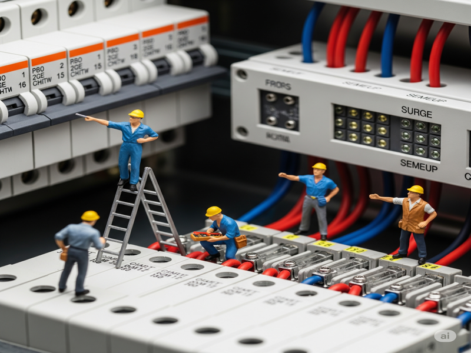
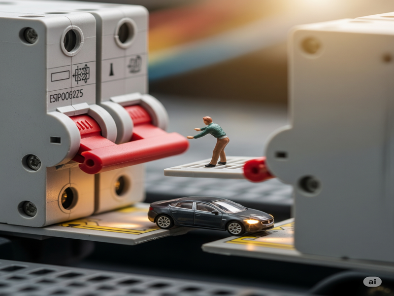

บทที่ 4: อุปกรณ์ป้องกัน...ทำไมถึงต้องมี?
ความปลอดภัยคือสิ่งที่สำคัญที่สุดในการติดตั้งระบบโซลาร์เซลล์ อุปกรณ์ป้องกันไม่ได้มีไว้เพื่อ "กันไม่ให้ระบบพัง" เท่านั้น แต่มีไว้เพื่อ "ป้องกันอันตรายต่อชีวิตและทรัพย์สิน" เช่น อัคคีภัย และไฟฟ้าดูด
4.1 DC/AC เบรกเกอร์ (Circuit Breaker)
- ทำหน้าที่เหมือน: "สะพานไฟ" หรือ "สวิตช์อัตโนมัติ"
-
หน้าที่หลัก:
- ใช้สำหรับเปิด-ปิดวงจรไฟฟ้าด้วยมือ เพื่อการซ่อมบำรุง
- ตัดวงจรโดยอัตโนมัติเมื่อมีกระแสไฟฟ้าไหลผ่านมากเกินกว่าที่กำหนด (Overcurrent) หรือเมื่อเกิดไฟฟ้าลัดวงจร (Short Circuit)
- ข้อควรจำ: เบรกเกอร์สำหรับไฟฟ้า DC และ AC ไม่สามารถใช้แทนกันได้ ต้องเลือกใช้ให้ถูกประเภท
4.2 DC/AC อุปกรณ์ป้องกันฟ้าผ่า/ไฟกระชาก (Surge Protection Device - SPD)
- ทำหน้าที่เหมือน: "เกราะป้องกัน" หรือ "วาล์วระบายแรงดัน"
- หน้าที่หลัก: ป้องกันอุปกรณ์ในระบบ (โดยเฉพาะอินเวอร์เตอร์) จากความเสียหายที่เกิดจากแรงดันไฟฟ้าที่สูงขึ้นอย่างรวดเร็วผิดปกติ ซึ่งอาจเกิดจากฟ้าผ่าในบริเวณใกล้เคียง หรือปัญหาในระบบสายส่งของการไฟฟ้า โดย SPD จะทำหน้าที่ "ลัดวงจร" แรงดันส่วนเกินนั้นลงสู่ระบบสายดินอย่างรวดเร็ว
4.3 DC/AC ฟิวส์ (Fuse)
- ทำหน้าที่เหมือน: "ทหารยอมตาย" หรือ "องครักษ์พลีชีพ"
- หน้าที่หลัก: ป้องกันอุปกรณ์จากกระแสไฟฟ้าที่ไหลเกินค่าที่กำหนด ฟิวส์จะ "ขาด" หรือ "ละลาย" เพื่อตัดวงจรไฟฟ้า เป็นการสละตัวเองเพื่อป้องกันไม่ให้อุปกรณ์ที่สำคัญและมีราคาแพงกว่า (เช่น แผงโซลาร์, อินเวอร์เตอร์) ได้รับความเสียหาย
- ความแตกต่างจากเบรกเกอร์: ฟิวส์เมื่อขาดแล้วต้องเปลี่ยนใหม่เสมอ ในขณะที่เบรกเกอร์เมื่อทริปแล้วสามารถสับกลับขึ้นไปเพื่อใช้งานใหม่ได้
4.4 ระบบสายดิน (Grounding)

- ทำหน้าที่เหมือน: "เส้นทางหลบภัย" สำหรับไฟฟ้า
- หน้าที่หลัก: เป็นเส้นทางให้กระแสไฟฟ้าที่อาจรั่วไหลออกจากระบบหรืออุปกรณ์ (เช่น กรณีไฟรั่วที่โครงแผงโซลาร์ หรือที่ตัวอินเวอร์เตอร์) ไหลลงสู่พื้นดินได้อย่างปลอดภัย ป้องกันไม่ให้ผู้ที่ไปสัมผัสอุปกรณ์เหล่านั้นถูกไฟฟ้าดูด นอกจากนี้ยังเป็นเส้นทางให้ Surge Protection ทำงานได้อย่างสมบูรณ์อีกด้วย การติดตั้งระบบสายดินที่ถูกต้องตามมาตรฐานจึงเป็นสิ่งที่สำคัญอย่างยิ่ง